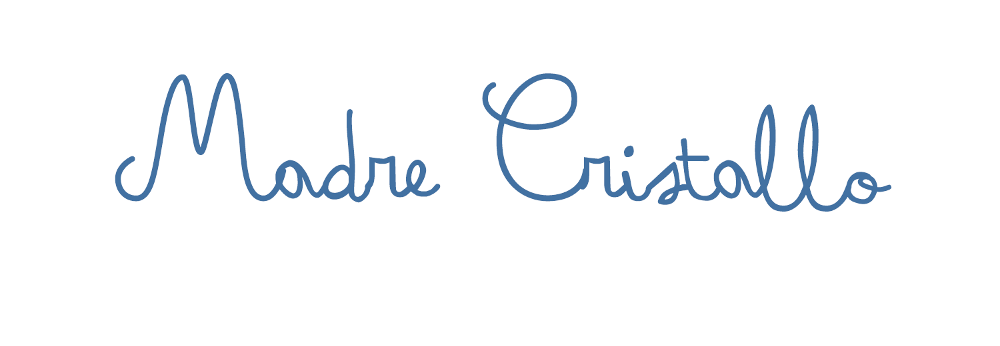
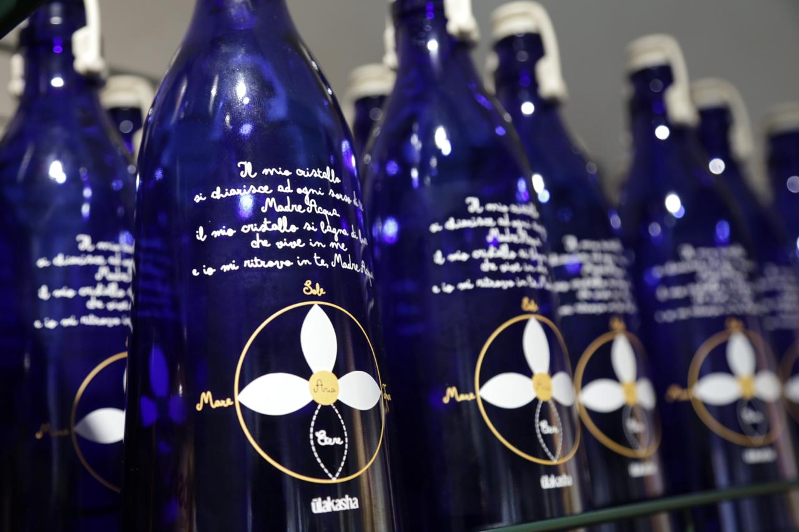

Madre Cristallo
“Il mio cristallo si chiarisce ad ogni sorso di te, Madre acqua. Il mio cristallo si bagna di luce che vive in me e io mi ritrovo in te, Madre acqua.”

La bottiglia Madre Cristallo
La bottiglia “Madre Cristallo” nasce dalla volontà di portare attenzione all’uso quotidiano dell’elemento acqua, la base del nostro essere.
L’acqua è viva ed è per questo che si può creare uno scambio, una conversazione con lei.
Le parole, i suoni, i simboli e i colori lasciano un’informazione che interagisce con il sistema di chi l’accoglie. Bere acqua in modo consapevole può diventare un grande vantaggio, i nostri antenati conoscevano bene questo potere e Ulakasha vuol fare semplicemente riemergere il ricordo.
Nelle bottiglie è stata stampata, con una tecnica antica di vetrofusione, una preghiera e un simbolo ancestrale, proveniente dal mondo sottile dell’Akasha. Abbiamo voluto una bottiglia creata da mani gentili, mani che si prendono cura, mani che portano l’oro.